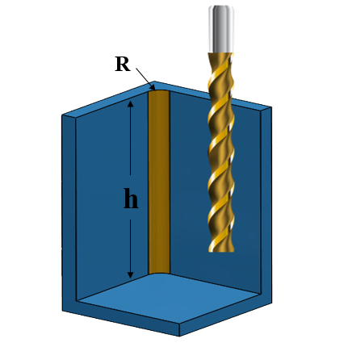
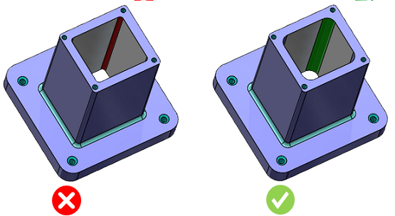

コーナーRが深いフライス加工フィーチャーの設計は避けてください。
ポケットのコーナーRが深い場合、加工にはより長いエンドミルが必要となり、工具の破損やビビりが発生しやすく、加工時間も長くなります。その結果、製造コスト全体が増加します。

ここでは、
h = ポケットの深さ
R = 側面R（コーナー半径）
一般的なガイドラインとして、フィーチャーの深さとコーナーRの比は 8.0 を超えないようにしてください（材料によっては、より小さい値が推奨される場合があります）。
期待される比率を満たすために、コーナーRを大きくする、またはポケットの深さを小さくすることが推奨されます。
DFMPro は、フィーチャーの深さとコーナーRの比を算出し、設定された値と比較してチェックします。
ユーザーは、デフォルトで設定されている比率を編集することができます。
